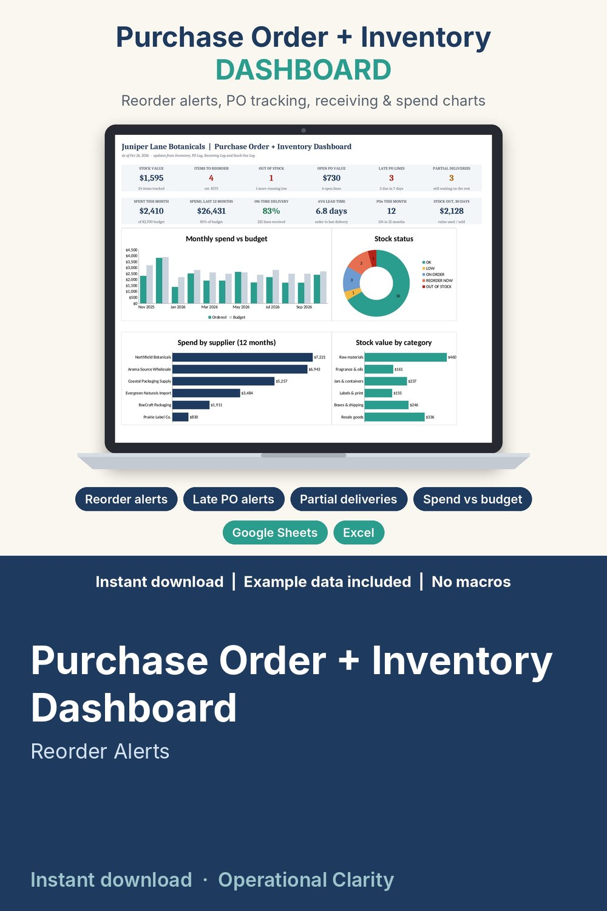

Purchase Order + Inventory Dashboard

PURCHASE ORDER + INVENTORY DASHBOARD | Google Sheets and Excel | Instant Download
Stop guessing what to reorder and chasing suppliers by email. One connected workbook shows your stock value, what to order today, every open purchase order, what is late, and where your money went this month.
WHAT IT DOES
• Reorder alerts: on hand, on order, days of stock and a run-out date for every item, with the exact quantity, supplier and cost to order
• Purchase order tracking: expected dates from each supplier's lead time, open quantity, LATE and DUE SOON alerts
• Receiving log that handles partial deliveries and damaged units, and flags anything that arrives without a PO
• Supplier scorecard: 12-month spend, open PO value, on-time percentage, average lead time and an A / B / C rating
• Monthly spend vs budget by month and by category, with OVER BUDGET and NEAR LIMIT flags
• Printable purchase order: pick a PO number, print it or save it as a PDF and email it to your supplier
WHAT'S INSIDE (10 tabs)
• DASHBOARD - 12 KPI tiles, 4 charts (monthly spend vs budget, stock status, spend by supplier, stock value by category), a REORDER NOW list and a LATE + DUE SOON list
• Inventory - up to 300 items: unit cost, reorder point, reorder qty, on hand, on order, stock value, average daily use, days of stock, run-out date, status, suggested order qty
• PO Log - up to 1,000 PO lines with status, alerts and days late
• Receiving Log - up to 1,500 deliveries, partial or damaged
• Stock Out Log - up to 4,000 rows: sales / usage, waste, count adjustments
• Suppliers - up to 100 suppliers with lead times, terms and ratings
• Monthly Spend - 12 months, ordered vs received vs budget, by category
• Purchase Order - printable PO form (12 lines)
• Settings - as-of date, alert windows, budgets and drop-down lists
• START HERE - tab guide, 20-minute setup and a 10-minute weekly routine (PDF)
HOW IT WORKS
1) Open the workbook in Google Sheets (File upload, then Open with Google Sheets) or Excel. 2) Fill in Settings, Suppliers and Inventory. 3) Add a row to the PO Log when you order, log each delivery on the Receiving Log, log what you use on the Stock Out Log. 4) Read the DASHBOARD: it tells you what to order and who to chase.
BEST FOR
Handmade and craft sellers, Etsy and online shops, boutiques, cafes and bakeries, salons, small warehouses and anyone who buys stock from suppliers and keeps running out at the wrong moment.
WHY THIS ONE
Realistic example data (a small bath & body brand with 24 items, 7 suppliers and 12 months of orders) is already filled in, so you can see how every tab connects before you type a thing. Yellow cells are where you type, green cells calculate. No macros, no add-ons, no monthly fee.
FORMATS
• Purchase_Order_and_Inventory_Dashboard.xlsx - works in Google Sheets, Microsoft Excel 2010 or newer, and LibreOffice
• 0_START_HERE.pdf - setup guide
GOOD TO KNOW
• Instant digital download. No physical item will be shipped.
• Personal / single-business use. No reselling or sharing, including modified versions.
• For your own records: it does not connect to your store, bank or accounting software.